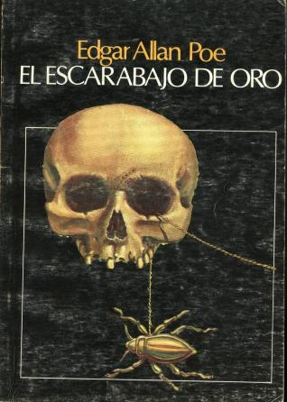

Por, Edgar Allan Poe Publicado por primera vez en 1845.
Cita:
«El demonio del mal es uno de los instintos primeros del corazón humano».
El cuervo (inglés: The Raven) es un poema narrativo. Constituye su composición poética más famosa,
ya que le dio reconocimiento internacional. Son notables su musicalidad, el lenguaje estilizado y la
atmósfera sobrenatural que logra recrear. El texto narra la misteriosa visita de un cuervo parlante a
la casa de un amante afligido, y del lento descenso hacia la locura de este último. El amante, que a
menudo se ha identificado como un estudiante, llora la pérdida de su amada, Leonora. El cuervo negro,
posado sobre un busto de Palas Atenea, parece azuzar su sufrimiento con la constante repetición de
las palabras «Nunca más» (Nevermore). En el poema, Poe hace alusión al folclore y a varias obras clásicas.
La publicación de El cuervo, el 29 de enero de 1845 en el diario New York Evening Mirror, convirtió a Poe en un personaje muy popular en su época. Pronto se hicieron reimpresiones, parodias y versiones ilustradas del poema.
 El escarabajo de oroPor, Edgar Allan Poe Publicado por primera vez en junio de 1843.
Cita:
«Más cuerdo es, el que acepta su propia locura».
Cuenta el hallazgo de un tesoro. La aventura ocurre en el siglo XVIII, en la isla de Sullivan,
cerca de Charleston. El narrador relata un suceso de la amistad que entabló con William Legrand
(un hombre solitario), quien vivía en la isla con un ya liberado sirviente llamado Júpiter.
En una de sus visitas a su amigo Legrand, el melancólico hombre le comentó que había encontrado
un escarabajo que parecía de oro. Legrand dibujó el insecto en un pergamino y lo entregó a su amigo
para que lo observara, pero su allegado solo atinó a decir que el dibujo parecía una calavera.
Legrand, malhumorado, tomó el pergamino y lo examinó; finalmente guardó el pergamino en un cajón.
Su amigo, al percatarse del estado de ánimo de Legrand, decidió marcharse.
Por, Edgar Allan Poe Publicado por primera vez en agosto de 1843.
Cita:
«El único medio de conservar el hombre su libertad es estar siempre dispuesto a morir por ella».
El gato negro (título original en inglés: The Black Cat) es un cuento de horror del escritor estadounidense Edgar Allan Poe,
publicado en el periódico Saturday Evening Post de Filadelfia en su número del 19
de agosto de 1843. La crítica lo considera uno de los más espeluznantes de la historia de la literatura.
Un joven matrimonio lleva una vida hogareña, apacible con su gato, hasta que el joven empieza a dejarse arrastrar por la bebida. El alcohol lo vuelve irascible y en uno de sus accesos de furia acaba con la vida del animal. Un segundo gato aparece en escena, la situación familiar empeora, y los acontecimientos se precipitan hasta culminar en un horrendo desenlace.